The assignment for this week is to develop a program in the Arduino IDE that uses most of the techniques learnt in the lecture, such as Data types, Operators, Control structures, Functions, Serial, Libraries, etc., and also to upload the program to one of the FabLab made boards. For me, I will explain step-by-step how I developed the final sketch from last week for my board.
In order to program the RGB LED (NeoPixel), I need to use the Neopixel Library from Adafruit. The steps to install the library and load the example sketch have already been documented last week as well. The initial program looks as followed:
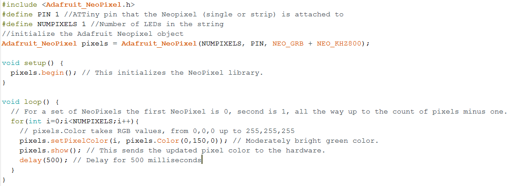With this example, the LEDs on the strip will be lit up with moderately green color one by one with a pause of 500 milliseconds in between, due to the for loop and the delay() function. This is however not visible when there is only one LED like in my case. Thus, I can remove the for loop and the delay() function because it does not have any effect in this case and can help to reduce the size of the program.
Next, I would like to try to change the sketch so that I can use the Switch-Case control structure to switch different color modes for the Neopixel by defining the color_mode macro. The editted code looks like following:
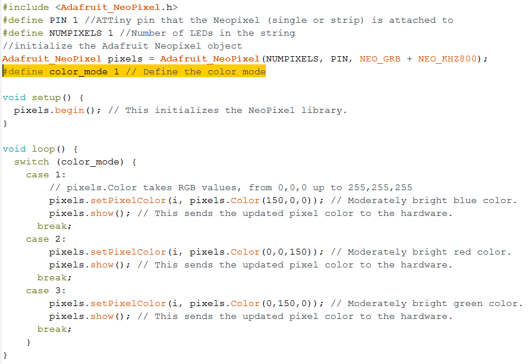With this control loop, the color mode of the Neopixel will change according to the value of the color_mode macro declared before the setup() function. That means if I change the value of the macro before uploading the sketch to the board, the color of the Neopixel will also change accordingly:
When color_mode = 1, Neopixel color is blue
When color_mode = 2, Neopixel color is red
When color_mode = 3, Neopixel color is green
After testing that this works on my board, I started to add more color modes to the switch-case control, including a "BLACK" color which means the Neopixel is actually not lit at all. Also, I can bring the pixels.show() function outside of the Switch control so that I do not have to repeat it in every case. The new loop() function looks like this:
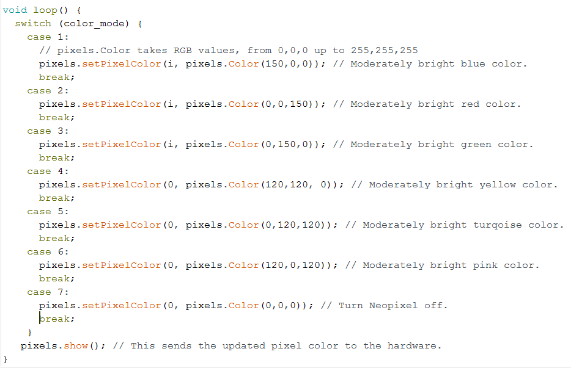That is basically it for programming the Neopixel. Next, I would like to program the button's press to cycle through the color modes instead of pre-defining it at the beginning of the program.
I want to program the button first in a separate sketch and then put the 2 sketches for the Neopixel and the button together afterwards, instead of directly modifying the sketch for the Neopixel from above. By doing this, I can prevent making unwanted changes to the already working code.
Thus, I open the example sketch from the Arduino IDE for the button which is called DigitalReadSerial and can be found under File -> Examples -> Basic -> DigitalReadSerial.
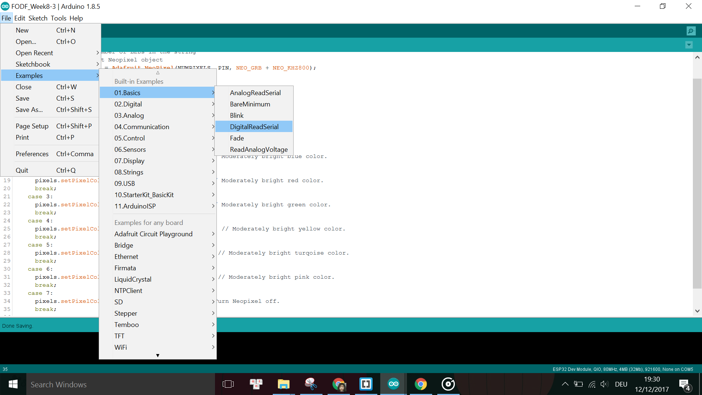First I modify the sketch by specifying the pin that the button is attached to:
#define BUTTON_PIN 2
Next, in order to see the result of the Serial.println() function in the sketch, I need to define a Software Serial object on 2 available pins on the board, because the ATTiny45 does not come with Hardware Serial. Since Digital pin 1 (pin number 6) has been used for the Neopixel and Digital pin 2 (pin number 7) has been used for the Button, and the pins D3 and D4 are not breakout in my design, I only have (luckily) 2 pins left available for the Software Serial, which are D5 and D0. I need to define these pins as TX and RX pins at the beginning of the sketch and include the Software Serial library:
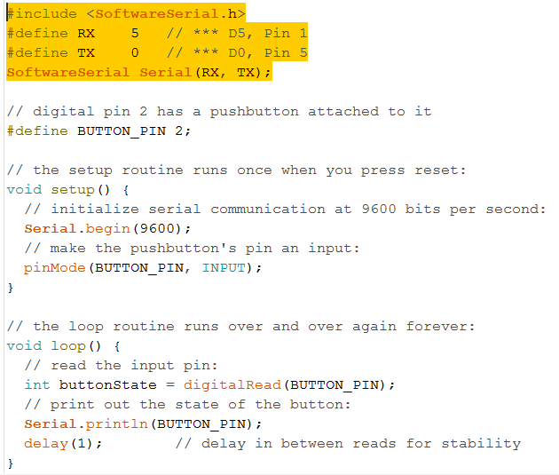Then I uploaded the sketch to my FabLab made board. The result of this program is that when the button is pressed, we will read on the Serial monitor the state of the button as 0 for NOT PRESSED or 1 for PRESSED respectively. However, in order to actually read the data from the Serial monitor, we need to connect the board over the 232R TTL-to-USB Serial converter to the PC's USB port. Note that the Baud rate has to be set according to what is defined in the sketch in order to read the data, in this case it is 9600.
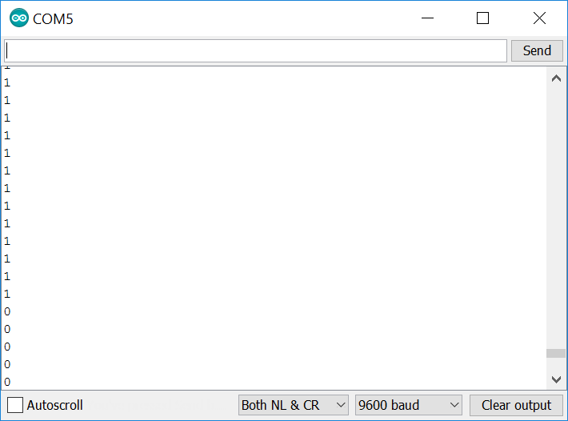Then I modify the loop() function in this sketch so that I can print to the Serial Monitor a string instead of just the numbers. For example, I can also use the IF-ELSE conditions to print different strings when the button is pressed or not pressed. My edited loop program looks like this:
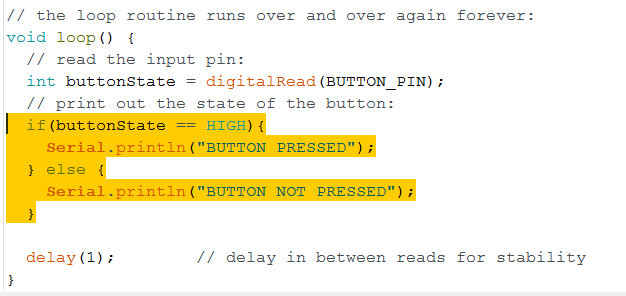And this is what is shown on the Serial Monitor:
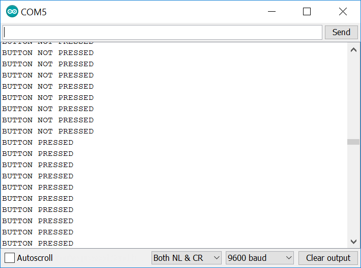The sketch is working fine, however, usually with tactile switches there is the problem of bouncing, where the button's state can fluctuate between 0 and 1 by accident while being pressed or due to noises, even though in a very short moment. In order to eliminate this to get a stable reading of the button's state, we need to debounce the button by waiting for small time gap (debouncing time) from the moment that the button's state has just changed. At the end of the debouncing time we will read the state of the button again and assume this is the current state of the button.
The Debounce example can be found under File -> Examples -> Digital -> Debounce.
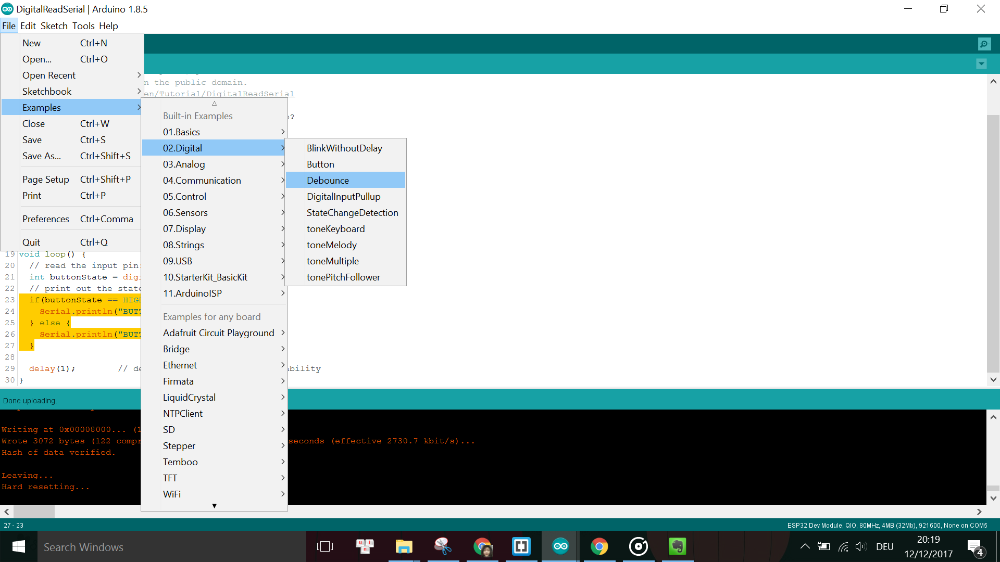However, instead of changing the state of the LED according to the state of the button like in the example sketch, I would like to modify it so that I can use the button to cycle through different color mode for the LED. Thus, I use the Serial print to simulate this mode cycler. The modified sketch looks like this:
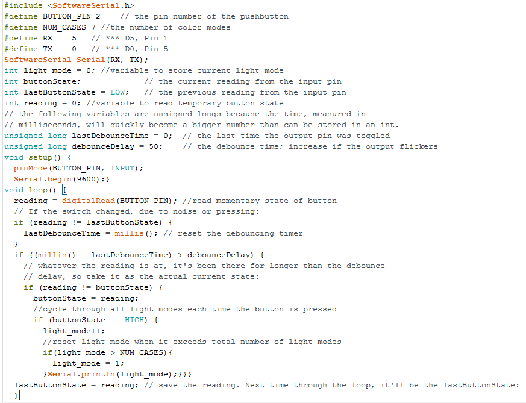The color mode will only change and be printed when the button is pressed once:
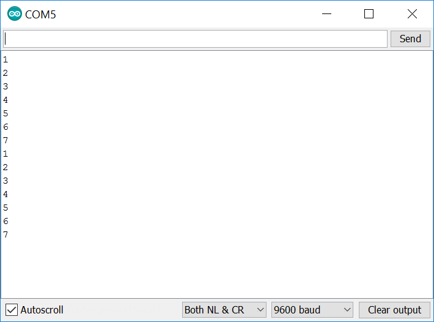Now that I have finished programming both the Neopixel and the button, I combine the 2 sketches together in order to have the final sketch where the button press directly affects the color modes of the Neopixel.
The problems I encountered this week were mainly about the software which requires some debugging and troubleshooting.
The first problem was that I did not do debouncing of the button. As a result, the reading of the button's state was not stable enough, as can be seen when comparing these 2 GIFs:


Left: Before debouncing, Right: After debouncing
Another problem with the software was where the switching of the Neopixel's mode should be done in the code. For example, at the beginning the LED was flickering because the HIGH state of the button (thus the Neopixel is on) was printed all the time, even when its state was constantly at HIGH. Afterwards, I had to modify the code so that the HIGH state of the button is only printed when there is a change in state from LOW to HIGH:
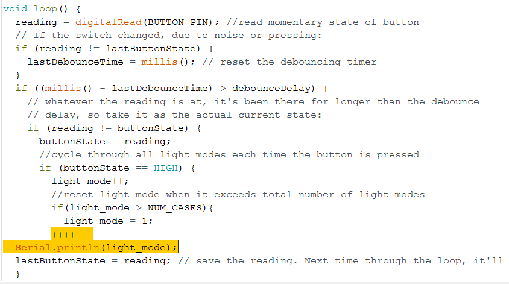 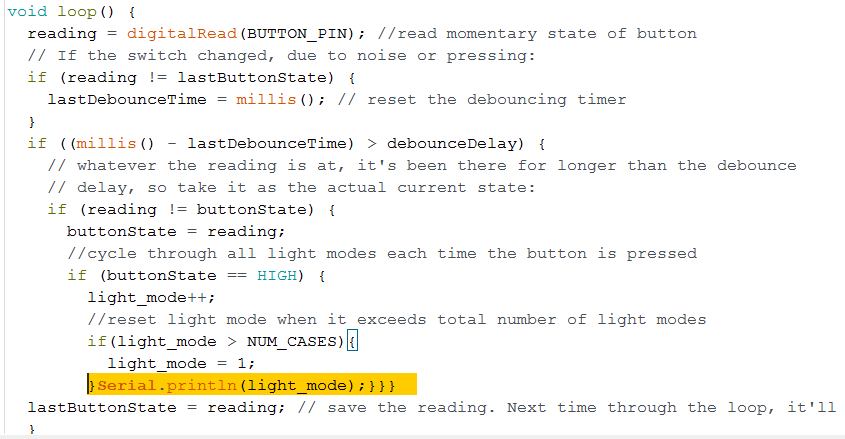LEFT: before, RIGHT: after
As a result, in the beginning the Neopixel was flickering for every color mode because the button state was read all the time thus the color mode was set all the time:
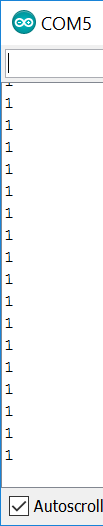 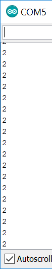 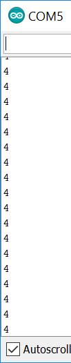 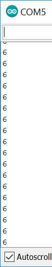Meanwhile, after changing the sequence of the code, the correct printing should be like in this screenshot.